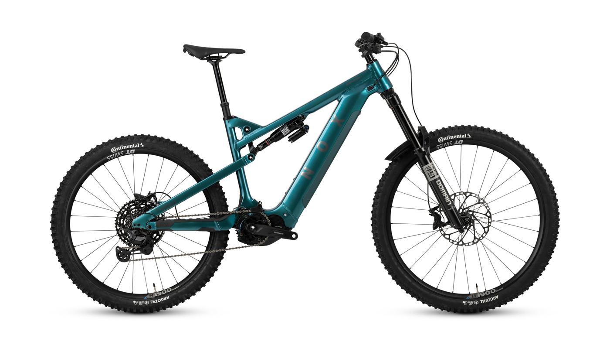

Im Werk abholen
100 € sparenHol dein Bike im NOX-Werk in Schlitters ab. Dein Aktionspreis reduziert sich zusätzlich um 100 € pro Bike.
Gewerbegebiet Süd 3 · SchlittersDEIN RAIFFEISEN-MITARBEITERVORTEIL
Für den Alltag, fürs Wochenende oder für deine nächste Bergtour: Entdecke dein E-Bike zu besonderen Mitarbeiterkonditionen.
Mein passendes Bike finden →Bike-Katalog zum Ausdrucken ↓Für Mitarbeiter & Familien
Direkt bei NOX · Persönliche Größenberatung
Zustellung durch NOX mit Einweisung
ZWEI HIGHLIGHTS FÜR DEINEN EINSTIEG
Alle Preise inkl. 20 % USt. · Modellabbildungen
DAS MACHT DEIN ANGEBOT BESONDERS
Beim Epium Enduro 7.1 Pro gegenüber der UVP. Dein Aktionspreis: 4.649,50 €.
Deinen Preisvorteil entdecken →720 Wh zusätzlicher Akku im Wert von 800 € – bei den gekennzeichneten RS-Modellen 5.1, 5.9 und 7.1.
Deinen RS-Bonus ansehen →112 Nm beschreibt die Kraft des Motors. Die RS-Ausführungen unterstützen dich auch auf ansteigenden Wegen.
Passendes Bike finden →Zu den RS-Modellen 5.1, 5.9 und 7.1 erhältst du einen 720-Wh-Zusatzakku im Wert von 800 € gratis dazu.
800 € Warenwert · gratis zu deinem RS-BikeEin voller Zusatzakku gibt dir mehr Spielraum für deine Ausflüge. Gilt nur für die gekennzeichneten RS-Bikes 5.1, 5.9 und 7.1; Amplifier, Epium, Helium und XC sind ausgenommen.
FINDE DEINEN FAHRSTIL
Wähle zuerst deinen Einsatzbereich.
Vergleiche dann Preis, Bonus und verfügbare Größen.
Bestandsbasis: Sonderlagerliste 01/2026; Aufbereitung vom 08.10.2026. Die endgültige Verfügbarkeit wird bei deiner Anfrage bestätigt. Modellbilder können von der verfügbaren Farbe und Ausstattung abweichen.

DU MÖCHTEST UNSER NEUES MODELL?
Neue Bikes mit Shimano-Antrieb und 820-Wh-Akku. Für sportliche Ausflüge und anspruchsvolle Wege.
Mitarbeiterpreise inkl. 20 % USt. · Ohne RS-Zusatzakku-Bonus
DEIN BIKE KOMMT PERSÖNLICH ZU DIR
Bei der Zustellung bringt dir ein NOX-Mitarbeiter dein Bike persönlich und weist dich in dein neues E-Bike ein. Du kannst deine Fragen direkt stellen.
Alle Beträge inkl. 20 % USt. Entfernung und Übergabetermin stimmen wir bei deiner Anfrage mit dir ab.
DEIN MITARBEITERPREIS
Vergleiche UVP, Aktionspreis und Ersparnis. Bei persönlicher Abholung im Werk sparst du zusätzlich 100 € pro Bike.
Gesamtliste als PDF ↓| Bike / Ausführung | UVP | Aktionspreis | Du sparst | Werksabholung | Zusatzakku-Bonus |
|---|
Alle Preise inkl. 20 % USt. Persönliche Zustellung bis 50 km ab Werk kostenlos, darüber hinaus innerhalb Österreichs 100 € Pauschale. Der Zusatzakku gilt nur für die gekennzeichneten RS-Ausführungen 5.1, 5.9 und 7.1.
OPTIONALER ALTEOS PREMIUMSCHUTZ
Mit dem Alteos Premiumschutz sicherst du dein neues E-Bike gegen Diebstahl, unerwartete Schäden und versicherten Verschleiß ab – ohne Selbstbeteiligung.
Schutz bei Diebstahl, Einbruchdiebstahl und Raub – auch für Akku und mitversichertes Zubehör.
Versichert sind unter anderem Schäden durch Sturz, Unfall, Vandalismus, Feuchtigkeit und Elektronikschäden.
Abgesichert sind die in den Bedingungen genannten Teile, einschließlich Reifen und Bremsen. Auch Akkuverschleiß ist bei Unterschreiten der festgelegten Kapazitätsgrenzen eingeschlossen.
Unterstützung bei Pannen und Unfällen im Rahmen der vereinbarten Leistungen.
Zusätzlicher Schutz bei gestiegenen Wiederbeschaffungskosten im versicherten Ersatzfall.
Preisbeispiel für ein neues E-Mountainbike, Kundenwohnsitz Österreich, Kaufpreis 4.000 €, Kaufdatum 13.10.2026 und Versicherungsbeginn 01.11.2026. Alternativ monatliche Zahlung: 16,80 € (201,60 € jährlich).
Es gelten die Annahmevoraussetzungen und Versicherungsbedingungen von Alteos/AXA, insbesondere Sicherungspflichten, Leistungslimits und Ausschlüsse. Premium umfasst höchstens zwei Reparaturen und zwei Verschleißschäden pro Jahr. Reine kosmetische Schäden sowie Downhill-/Dirt-Bikes und gewerbliche Vermietung sind nicht eingeschlossen. Stand: Oktober 2026.
Optionaler Versicherungsschutz: Die konkrete Prämie und Versicherbarkeit werden für dein Wunschbike geprüft. Der Versicherungsbeitrag ist nicht im Bike-Aktionspreis enthalten.
DIREKT AUS DEM ZILLERTAL
Du bist bei der Größe oder Ausstattung noch unsicher? Wir beraten dich persönlich und prüfen dein Wunschbike für dich.
Modell, Farbe und Größe in der Detailansicht ansehen.
Deine Auswahl wird in eine vorbereitete E-Mail übernommen.
Verfügbarkeit, passende Rahmengröße und Lieferung oder Abholung besprechen.
Die Auswahl richtet sich an Raiffeisen-Mitarbeiter und ihre Familien. Du fragst dein Wunschbike direkt bei NOX an. Das NOX-Team bestätigt die Verfügbarkeit und stimmt die weiteren Schritte mit dir ab. Eine Anfrage ist noch keine Bestellung.
Zu den gekennzeichneten RS-Ausführungen der Modelle 5.1, 5.9 und 7.1 erhältst du einen 720-Wh-Zusatzakku im Wert von 800 € gratis dazu. Andere Modelle und Antriebe sind ausgenommen.
Du kannst dein Bike im Werk Schlitters abholen und zusätzlich 100 € sparen. Alternativ bringt dir ein NOX-Mitarbeiter dein Bike persönlich und weist dich in das Produkt ein. Bis einschließlich 50 km ab Werk ist diese Zustellung kostenlos, über 50 km innerhalb Österreichs kostet sie 100 €. Den Termin stimmen wir gemeinsam ab.
Du kannst den Alteos Premiumschutz optional mitanfragen. Das Preisbeispiel für ein neues E-Mountainbike mit 4.000 € Kaufpreis beträgt 175 € bei jährlicher Zahlung. NOX prüft mit dir die Versicherbarkeit und konkrete Prämie für dein Wunschbike. Der Beitrag ist nicht im Bike-Aktionspreis enthalten.
S, M, L und XL bezeichnen die Rahmengröße. Die Passform hängt auch von Körpergröße, Schrittlänge und Fahrstil ab. Lass dich von NOX beraten, bevor du dich festlegst.
Die angegebenen Aktionspreise sind Bruttopreise inklusive 20 % Umsatzsteuer. Die UVP stammt aus dem Aktionsbestand. Verfügbarkeit und Übergabetermin werden vor einer Bestellung bestätigt. Bei Werksabholung sparst du zusätzlich 100 € pro Bike. Persönliche Zustellung inklusive Einweisung ist bis 50 km ab Werk kostenlos; darüber hinaus beträgt die Pauschale innerhalb Österreichs 100 €. Die Seite zeigt einen Angebotsentwurf zur Abstimmung.